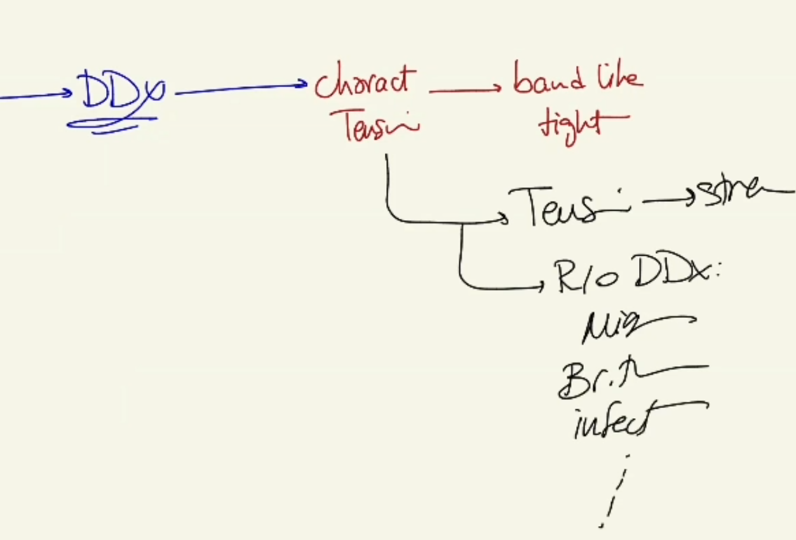

Headache During Blood Transfusion - Assessing Transfusion Reactions
Source: Dr. Amir workshop — Med workshop 2 - 2026 / CLASS 1 HEADACHE (Aug 2026 drop) · Specialty: neurology
Special Context
A pilot case (appeared once in 2025, vague recalls; some candidates were asked to perform a physical examination). Use the standard headache structure, but the special context is that the patient is receiving a blood transfusion. The headache is not the main concern — the priority is to detect a transfusion reaction.
Opening and Concern
Begin with haemodynamic stability (particularly relevant here), sit down and introduce yourself. Use an open-ended question and respond to the concerned patient: "I understand why you're concerned; I'm also concerned." A key discriminating question: "Is this the first time you've had such a headache?" A first-ever headache during transfusion points to a transfusion problem; a recurrent headache opens other differentials.
Key Reaction and Overload Questions
Reaction: rashes; itchiness; shortness of breath; chest pain; noisy breathing (uncommon but relevant for allergic reaction); fever and chills (febrile reaction). Reason for transfusion: ask why she is being transfused (she reports anaemia) and whether she has had previous transfusions/treatment. If it is an iron infusion (for anaemia), be especially alert to allergic/anaphylactic reactions — rashes, itchiness, noisy breathing with stridor. The questions remain the same whether it is a blood or iron transfusion.
Headache Differentials
A candidate reported tension-headache characteristics (band-like, tightening). Rule out the tension key point (stress), then briefly cover migraine, brain tumour and a few infections.
Physical Examination
Follow the headache examination structure with additional transfusion-reaction steps:
- General appearance: level of consciousness, rashes.
- Vital signs.
- Neurological, ENT, cervical spine as per the headache examination (inspect and palpate the head/face, temporal region for temporal arteritis, sinus tenderness, periorbital/eye palpation for glaucoma, oral/throat for dental and post-nasal drip; a mini eye examination and visual acuity; proximal myopathy check).
- Reaction features: rashes, noisy breathing, lip swelling (especially if the case changes to an iron infusion).
- For overload: cardiovascular examination (S1/S2, added sounds, murmurs, raised JVP) and respiratory examination (equal air entry, added sounds).
Diagnosis
Consider two conditions. The main concern is a transfusion reaction (without over-specifying whether volume overload or febrile reaction): "When we give blood we check and match your blood group, but minor factors in the blood can cause allergic or febrile reactions." The second consideration is a headache with tension-type characteristics. The top diagnosis remains transfusion-related, and the priority is to ensure the patient is not having a reaction.
Case Figures





🔬 Expert Review & Enhancements
Reviewed by: history-taking-expert (Australian clinical supervisor) · fact-checked against the irStudy medical textbook RAG index.
✏️ Corrections
For any suspected acute transfusion reaction the first action is to STOP the transfusion immediately, keep IV access open with normal saline, and reassess ABC. The must-not-miss reactions to name are acute haemolytic (ABO-incompatibility) reaction, anaphylaxis, TRALI (transfusion-related acute lung injury) and TACO (transfusion-associated circulatory overload), plus septic (bacterial contamination) reaction and febrile non-haemolytic reaction. Return the unit and giving set to the blood bank and recheck patient identity/labels - a core ANZSBT/NBA safety step.
⭐ Suggested Enhancements
🏷️ Metadata
📚 Reference Citations (RAG)
John Murtagh General Practice, 8th Edition.pdf p.Table 71.2 (p2014) qdrant:5de4d71b-c655-4990-b313-c782bc47d947
John Murtagh General Practice, 8th Edition.pdf p.index (p3567) qdrant:648f5cf0-9c45-402d-9978-276e45aa7b72
John Murtagh General Practice, 8th Edition.pdf p.80 (p229) qdrant:c4c0c7c3-11ce-41ad-b015-a13ca14f48ba